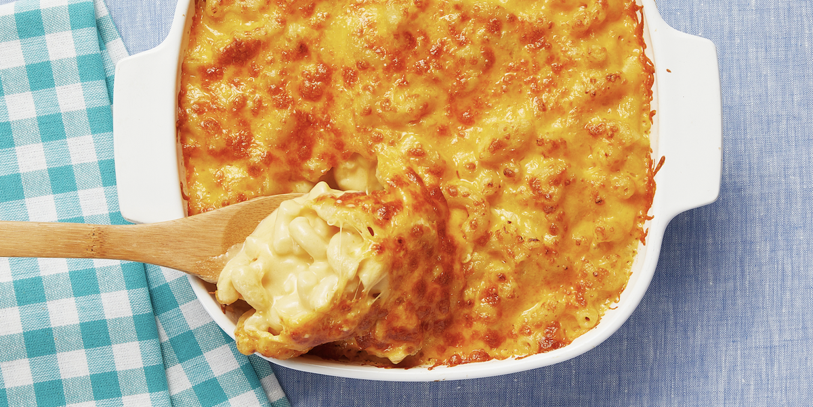

"Macaroni"

Macaroni is a dish made with Macaroni noodles (Hence the name) and sweet cheesy goodness. Today ill be showing you how to make this dish.
Ingredients
- 1 Box Macaroni Noodles
- 1/2 Stick of Velveta Cheese
- 3/4 Cup shredded cheese
Instructions
- First boil your noodles in a pot until they are nice and soft
- Next place your Velveta cheese in the pot with your noodles and mix till evenly distubeted
- Lastly sprinkle the shredded cheese over the top covering the whole surface for a nice cheesy coating
- Enjoy!